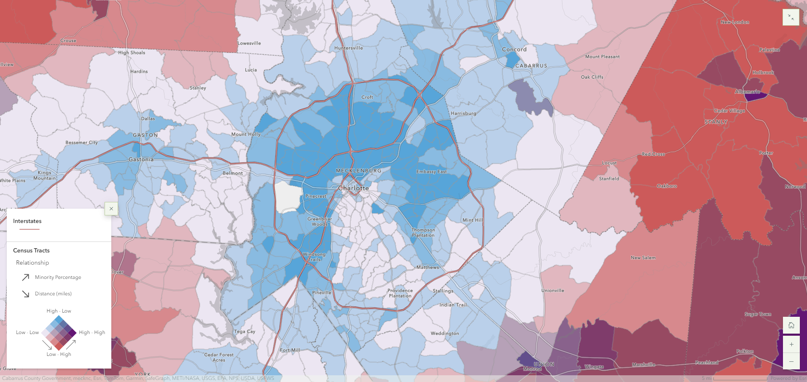

Lab 1
Bivarate map of Charolette, North Carolina
For Lab 1, I was tasked with telling a story using ArcGIS' Storymaps feature. The story I told was about the interstate system in the United States, and how its creation has had massive economic and social effects in cities all around the country. In order to complete this lab, I needed to have a firm understanding of visual storytelling, as well as develop a bivariate map and use graphics/statistics to support my story.
I chose this topic because I always been fascinated by the interstate system, yet I did not know about the history of it, nor why it was implented the way that it was. I wanted the Storymap to have a flow to it, taking the reader back in time at the beginning, then moving to the present and the current issues around the interstate system, then finally outlining changes that could be made to the system for the future.